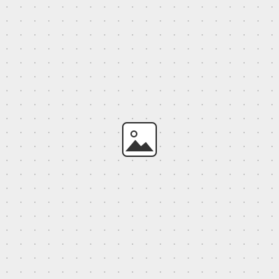

Idea
I came across a project that turns a 64×64 LED matrix into a display showing the album art of whatever I'm playing on Spotify (video , code ). The original project uses an off-the-shelf Adafruit RGB Matrix Bonnet on a Raspberry Pi. I wanted to design the embedded microcontroller board myself, from scratch.
As a reference for the enclosure, I like the KM5 CD player: it would be cool to put the board in a transparent box so you can see the board design.

The original project: album art on a 64×64 LED matrix. The KM5 CD player: the board shows through the case.
Learning the basics on a breadboard
I had no background in electronics, so I started from the fundamentals. I bought a few beginner textbooks in Japanese to get familiar with the vocabulary of circuits, and watched some introductory videos:
One of the textbooks: a timer circuit where a capacitor works like a bucket filling with water. They didn't make much sense to me at first. So over the weekend I bought a breadboard and a basic electronics kit, and followed this tutorial on transistors to build an oscillating circuit.
My oscillating circuit on the breadboard.
Physically touching each component changed how I related to them. I got emotionally invested. Once I had built something that blinked, I wanted to understand why each part was there.
First design: Raspberry Pi + XIAO RP2040
Learning with Claude
I asked Claude how to turn the Spotify display idea into a board I designed myself, and what I would need to learn along the way. It made me a step-by-step course (Ohm's law, pull-up resistors, analog input, power protection, logic levels, HUB75, and finally KiCad), which I worked through first.
Source bonnet-course.html · 719 lines <!DOCTYPE html>
<html lang="ja">
<head>
<meta charset="utf-8">
<meta name="viewport" content="width=device-width, initial-scale=1, viewport-fit=cover">
<title>自作Bonnetの回路図を描けるようになる教材</title>
<link rel="preconnect" href="https://fonts.googleapis.com">
<link rel="preconnect" href="https://fonts.gstatic.com" crossorigin>
<link href="https://fonts.googleapis.com/css2?family=Zen+Kaku+Gothic+New:wght@400;700&family=IBM+Plex+Mono:wght@400;500&display=swap" rel="stylesheet">
<style>
:root{
--paper:#F5F7F3; --sheet:#FFFFFF; --ink:#1C2433; --muted:#5B6472; --line:#D7DCD3; --grid:#E3E7DF;
--wire:#0A7A52; --part:#8E2B2B; --copper:#B26A25; --ok:#0A7A52; --bad:#B23A2E; --okbg:#E4F2EA; --badbg:#F8E7E4;
--sans:"Zen Kaku Gothic New","Hiragino Kaku Gothic ProN","Noto Sans JP",system-ui,sans-serif;
--mono:"IBM Plex Mono",ui-monospace,Menlo,Consolas,monospace;
box-sizing:border-box; padding-top:env(safe-area-inset-top,0px); padding-bottom:env(safe-area-inset-bottom,0px);
}
@media (prefers-color-scheme: dark){
:root:not([data-theme="light"]){
--paper:#11151B; --sheet:#171C23; --ink:#E5E9EF; --muted:#9AA3B0; --line:#2A323D; --grid:#1C222A;
--wire:#46C08F; --part:#E08A82; --copper:#E3A35F; --ok:#46C08F; --bad:#F08A7E; --okbg:#173126; --badbg:#3A1E1B;
}
}
:root[data-theme="dark"]{
--paper:#11151B; --sheet:#171C23; --ink:#E5E9EF; --muted:#9AA3B0; --line:#2A323D; --grid:#1C222A;
--wire:#46C08F; --part:#E08A82; --copper:#E3A35F; --ok:#46C08F; --bad:#F08A7E; --okbg:#173126; --badbg:#3A1E1B;
}
*,*::before,*::after{box-sizing:inherit}
html{scroll-padding-top:calc(env(safe-area-inset-top,0px) + 16px)}
body{margin:0;background-color:var(--paper);background-image:radial-gradient(var(--grid) 1px,transparent 1px);background-size:18px 18px;color:var(--ink);font-family:var(--sans);font-size:16px;line-height:1.85}
a{color:var(--wire)}
:focus-visible{outline:2px solid var(--copper);outline-offset:2px}
.wrap{max-width:1120px;margin:0 auto;padding:28px 20px 80px;display:grid;grid-template-columns:230px minmax(0,1fr);gap:36px}
header.top{grid-column:1/-1}
h1{font-size:30px;line-height:1.35;margin:0 0 6px;font-weight:700;letter-spacing:.01em}
.lead{color:var(--muted);margin:0 0 22px;max-width:62ch}
.mapcard{background:var(--sheet);border:1px solid var(--line);border-radius:14px;padding:18px 18px 12px}
.mapmeta{display:flex;justify-content:space-between;align-items:baseline;gap:12px;flex-wrap:wrap;font-size:14px;color:var(--muted);margin-bottom:8px}
.mapmeta strong{color:var(--ink);font-size:18px}
#board{width:100%;height:auto;display:block}
#board .blk rect{fill:var(--sheet);stroke:var(--line);stroke-width:1.5;transition:fill .5s,stroke .5s}
#board .blk text{fill:var(--muted);font-family:var(--sans);font-size:14px;transition:fill .5s}
#board .blk.done rect{fill:var(--copper);stroke:var(--copper)}
#board .blk.done text{fill:var(--sheet);font-weight:700}
#board .outline{fill:none;stroke:var(--wire);stroke-width:2}
#board .trace{stroke:var(--line);stroke-width:3;fill:none;transition:stroke .5s}
#board .trace.done{stroke:var(--copper)}
nav.toc{position:sticky;top:calc(env(safe-area-inset-top,0px) + 16px);align-self:start;font-size:14px}
nav.toc ol{list-style:none;margin:0;padding:0;border-left:2px solid var(--line)}
nav.toc li a{display:flex;gap:8px;align-items:baseline;padding:6px 10px;text-decoration:none;color:var(--muted);border-left:2px solid transparent;margin-left:-2px;line-height:1.5}
nav.toc li a:hover{color:var(--ink)}
nav.toc li a .n{font-family:var(--mono);font-size:12px;min-width:20px}
nav.toc li.done a{color:var(--ink)}
nav.toc li.done a .n{color:var(--copper)}
nav.toc li.done a::after{content:"済";margin-left:auto;font-size:11px;color:var(--copper);border:1px solid var(--copper);border-radius:4px;padding:0 4px}
.resetbtn{margin-top:14px;background:none;border:1px solid var(--line);color:var(--muted);border-radius:8px;padding:6px 10px;font:inherit;font-size:13px;cursor:pointer}
main{min-width:0}
section.mod{background:var(--sheet);border:1px solid var(--line);border-radius:14px;padding:26px 28px;margin-bottom:28px}
section.mod>h2{font-size:22px;line-height:1.4;margin:0 0 4px;font-weight:700;display:flex;gap:12px;align-items:baseline}
section.mod>h2 .n{font-family:var(--mono);font-size:15px;color:var(--copper);font-weight:500}
.goal{color:var(--muted);margin:0 0 18px;font-size:15px}
h3{font-size:17px;margin:26px 0 6px;font-weight:700}
p,ul{max-width:68ch}
ul{padding-left:1.2em}
code,.f{font-family:var(--mono);font-size:.92em}
.f{display:block;background:var(--paper);border:1px solid var(--line);border-radius:8px;padding:10px 14px;margin:10px 0;overflow-x:auto;white-space:pre}
.tbl{overflow-x:auto;margin:12px 0}
table{border-collapse:collapse;font-size:14px;min-width:100%}
th,td{border-bottom:1px solid var(--line);padding:7px 10px;text-align:left;vertical-align:top}
th{color:var(--muted);font-weight:700;white-space:nowrap}
td.m{font-family:var(--mono);white-space:nowrap}
.piece{border:1px dashed var(--wire);border-radius:10px;padding:14px 16px;margin:22px 0 6px}
.piece h4{margin:0 0 8px;font-size:15px;color:var(--wire)}
.piece svg{max-width:100%;height:auto;display:block}
.sch .w{stroke:var(--wire);stroke-width:2;fill:none;stroke-linecap:round;stroke-linejoin:round}
.sch .p{stroke:var(--part);stroke-width:2;fill:none;stroke-linecap:round;stroke-linejoin:round}
.sch .pf{fill:var(--part)}
.sch .dot{fill:var(--wire)}
.sch text{fill:var(--ink);font-family:var(--mono);font-size:13px}
.sch text.lb{fill:var(--part);font-family:var(--sans)}
.note{border-left:3px solid var(--copper);padding:4px 0 4px 14px;margin:14px 0;color:var(--ink)}
.note b{color:var(--copper)}
.ex{border:1px solid var(--line);border-radius:10px;padding:14px 16px;margin:14px 0;background:var(--paper)}
.ex .q{margin:0 0 10px;font-weight:700}
.ex .row{display:flex;gap:8px;flex-wrap:wrap;align-items:center}
.ex input{font:inherit;font-family:var(--mono);width:9em;padding:6px 10px;border:1px solid var(--line);border-radius:8px;background:var(--sheet);color:var(--ink)}
.ex .unit{font-family:var(--mono);color:var(--muted)}
.btn{font:inherit;font-size:14px;padding:6px 14px;border-radius:8px;border:1px solid var(--wire);background:var(--wire);color:var(--sheet);cursor:pointer}
.opt{font:inherit;font-size:14px;text-align:left;padding:8px 12px;border-radius:8px;border:1px solid var(--line);background:var(--sheet);color:var(--ink);cursor:pointer;line-height:1.5}
.opt:hover{border-color:var(--wire)}
.opts{display:flex;flex-direction:column;gap:6px}
.opt.sel-ok{border-color:var(--ok);background:var(--okbg)}
.opt.sel-bad{border-color:var(--bad);background:var(--badbg)}
.err{color:var(--bad);font-size:13px;margin-top:6px;min-height:0}
.fb{margin-top:10px;padding:10px 12px;border-radius:8px;font-size:15px;display:none}
.fb.ok{display:block;background:var(--okbg);border:1px solid var(--ok)}
.fb.bad{display:block;background:var(--badbg);border:1px solid var(--bad)}
.ex.solved{border-color:var(--ok)}
.checks label{display:flex;gap:10px;align-items:flex-start;padding:6px 0;border-bottom:1px solid var(--line);font-size:15px;cursor:pointer}
.checks input{margin-top:6px;accent-color:var(--copper)}
.modstatus{margin-top:18px;font-size:14px;color:var(--muted)}
.modstatus.done{color:var(--copper);font-weight:700}
@media (max-width:860px){
.wrap{grid-template-columns:1fr;gap:18px}
nav.toc{position:static}
nav.toc ol{display:flex;flex-wrap:wrap;border-left:none;gap:4px}
nav.toc li a{border:1px solid var(--line);border-radius:8px;margin:0;padding:4px 8px}
nav.toc li.done a::after{display:none}
nav.toc li.done a{border-color:var(--copper)}
section.mod{padding:20px 18px}
h1{font-size:24px}
}
@media (prefers-reduced-motion: reduce){*{transition:none!important}}
</style>
</head>
<body>
<div class="wrap">
<header class="top">
<h1>自作Bonnetの回路図を描けるようになる教材</h1>
<p class="lead">Spotifyマトリクス用の基板を、電気の基本から一つずつ組み立てます。各章の問題に正解すると、下の基板のブロックが銅色に埋まっていきます。全部埋まったら、KiCadで回路図を描く準備ができています。</p>
<div class="mapcard">
<div class="mapmeta"><span>基板の完成度</span><span><strong id="pct">0</strong> / 10 章</span></div>
<svg id="board" viewBox="0 0 640 230" role="img" aria-label="基板の進捗マップ">
<rect class="outline" x="6" y="6" width="628" height="218" rx="14"/>
<path class="trace" id="t-in" d="M150 80 H245"/>
<path class="trace" id="t-sig" d="M395 80 H490"/>
<path class="trace" id="t-pw" d="M320 120 V150"/>
<g class="blk" id="b-in"><rect x="24" y="40" width="126" height="80" rx="8"/><text x="87" y="78" text-anchor="middle">入力回路</text><text x="87" y="98" text-anchor="middle" style="font-size:12px">2・3・4章</text></g>
<g class="blk" id="b-mcu"><rect x="245" y="40" width="150" height="80" rx="8"/><text x="320" y="78" text-anchor="middle">XIAO まわり</text><text x="320" y="98" text-anchor="middle" style="font-size:12px">5・9章</text></g>
<g class="blk" id="b-sig"><rect x="490" y="40" width="126" height="80" rx="8"/><text x="553" y="78" text-anchor="middle">HUB75 信号</text><text x="553" y="98" text-anchor="middle" style="font-size:12px">7・8章</text></g>
<g class="blk" id="b-pw"><rect x="200" y="150" width="240" height="56" rx="8"/><text x="320" y="176" text-anchor="middle">電源と保護</text><text x="320" y="194" text-anchor="middle" style="font-size:12px">6章</text></g>
<g class="blk" id="b-base"><rect x="24" y="150" width="150" height="56" rx="8"/><text x="99" y="176" text-anchor="middle">電気の基本</text><text x="99" y="194" text-anchor="middle" style="font-size:12px">1章</text></g>
<g class="blk" id="b-all"><rect x="466" y="150" width="150" height="56" rx="8"/><text x="541" y="176" text-anchor="middle">回路図に統合</text><text x="541" y="194" text-anchor="middle" style="font-size:12px">10章</text></g>
</svg>
</div>
</header>
<nav class="toc" aria-label="目次">
<ol id="toc"></ol>
<button class="resetbtn" id="reset" type="button">進捗をリセット</button>
</nav>
<main id="main">
<section class="mod" id="m1" data-mod="m1">
<h2><span class="n">1</span>電気の基本:電圧・電流・抵抗</h2>
<p class="goal">この章のゴール:オームの法則で、回路のどこに何V・何mAがかかるかを計算できる。</p>
<h3>3つの量</h3>
<p><b>電圧(V、ボルト)</b>は「押す力」です。いつも2点の差として測ります。「このピンは3.3V」と言うときは、GNDを0Vとしたときの差のことです。<b>電流(A、アンペア)</b>は実際に流れる量、<b>抵抗(Ω、オーム)</b>は流れにくさです。</p>
<p>3つは <code>V = I × R</code> でつながっています。2つわかれば残り1つが出せます。</p>
<span class="f">V = I × R 電圧 = 電流 × 抵抗
I = V ÷ R 電流 = 電圧 ÷ 抵抗
R = V ÷ I 抵抗 = 電圧 ÷ 電流</span>
<h3>単位の接頭辞がいちばんの落とし穴</h3>
<div class="tbl"><table>
<tr><th>記号</th><th>意味</th><th>例</th></tr>
<tr><td class="m">k</td><td>× 1,000</td><td class="m">10kΩ = 10,000Ω</td></tr>
<tr><td class="m">m</td><td>÷ 1,000</td><td class="m">0.33mA = 0.00033A</td></tr>
<tr><td class="m">µ</td><td>÷ 1,000,000</td><td class="m">0.1µF = 0.0000001F</td></tr>
</table></div>
<p>計算する前に、全部をV・A・Ωに直す。これだけで桁ずれはほぼ防げます。</p>
<div class="note"><b>近道:</b><code>mA × kΩ = V</code>。mの「÷1000」とkの「×1000」が打ち消し合うので、数字だけ掛ければ電圧が出ます。0.1mA × 10kΩ = 1V。逆に <code>V ÷ kΩ = mA</code> も使えます。</div>
<div class="ex" data-id="m1q1" data-type="num" data-ans="5" data-tol="0.05">
<p class="q">5Vを1kΩの抵抗にかけると、何mA流れますか？</p>
<div class="row"><input inputmode="decimal" aria-label="答え"><span class="unit">mA</span><button class="btn chk" type="button">答え合わせ</button></div>
<div class="err"></div>
<div class="fb" data-ok="正解。5V ÷ 1kΩ = 5mA。V ÷ kΩ = mA の近道がそのまま使えます。" data-hint="I = V ÷ R。1kΩ = 1,000Ω に直してから割るか、V ÷ kΩ = mA の近道を使ってみてください。"></div>
</div>
<div class="ex" data-id="m1q2" data-type="num" data-ans="9.4" data-tol="0.05">
<p class="q">4.7kΩの抵抗に2mA流れています。抵抗の両端の電圧は何Vですか？</p>
<div class="row"><input inputmode="decimal" aria-label="答え"><span class="unit">V</span><button class="btn chk" type="button">答え合わせ</button></div>
<div class="err"></div>
<div class="fb" data-ok="正解。2mA × 4.7kΩ = 9.4V。" data-hint="V = I × R。mA × kΩ = V の近道で、2 × 4.7 を計算します。"></div>
</div>
<div class="ex" data-id="m1q3" data-type="num" data-ans="0.00033" data-tol="0.000004">
<p class="q">0.33mAをA(アンペア)で表すと？</p>
<div class="row"><input inputmode="decimal" aria-label="答え"><span class="unit">A</span><button class="btn chk" type="button">答え合わせ</button></div>
<div class="err"></div>
<div class="fb" data-ok="正解。0.33 ÷ 1000 = 0.00033A。" data-hint="mは÷1000です。小数点を左に3つ動かします。"></div>
</div>
<p class="modstatus"></p>
</section>
<section class="mod" id="m2" data-mod="m2">
<h2><span class="n">2</span>デジタル入力:ボタンとプルアップ</h2>
<p class="goal">この章のゴール:ボタンをマイコンに正しくつなぐ回路を描ける。</p>
<h3>入力ピンは電圧を見ている</h3>
<p>XIAOの入力ピンは、電圧が3.3Vに近ければH(1)、0Vに近ければL(0)と読みます。電流ではなく電圧を見ている、というのが大事な点です。</p>
<h3>フローティング</h3>
<p>ボタンの片側をピン、もう片側をGNDにつなぐだけだと、離したときピンがどこにもつながっていない状態になります。電圧が決まらず、ノイズや指の接近でHとLがランダムに変わります。これを<b>フローティング</b>と呼びます。</p>
<h3>プルアップ抵抗</h3>
<p>ピンと3.3Vの間に10kΩを入れると、離しているときは抵抗を通して3.3Vに引き上げられ、Hに決まります。押すとGNDに直結されてLになります。押すとLになる形が、一番よく使われます。</p>
<div class="piece">
<h4>回路図ピース:ボタン</h4>
<svg class="sch" viewBox="0 0 340 220" role="img" aria-label="プルアップ抵抗付きボタンの回路図">
<text x="44" y="18">3V3</text>
<path class="w" d="M60 24 V40"/>
<path class="p" d="M60 40 L60 46 L50 51 L70 58 L50 65 L70 72 L50 79 L70 86 L60 91 V96"/>
<text class="lb" x="80" y="72">R1 10kΩ</text>
<path class="w" d="M60 96 V140"/>
<circle class="dot" cx="60" cy="118" r="3.5"/>
<path class="w" d="M60 118 H200"/>
<text x="208" y="122">XIAO D8</text>
<circle class="p" cx="60" cy="144" r="3"/>
<circle class="p" cx="60" cy="178" r="3"/>
<path class="p" d="M60 147 L76 174"/>
<path class="p" d="M84 150 V172 M84 161 H70"/>
<text class="lb" x="96" y="166">SW1</text>
<path class="w" d="M60 181 V196"/>
<path class="w" d="M46 196 H74 M51 202 H69 M56 208 H64"/>
</svg>
<p style="margin:6px 0 0;font-size:14px;color:var(--muted)">ボタンは2個使うので、このピースを D8 と D9 に1つずつ描きます。</p>
</div>
<div class="ex" data-id="m2q1" data-type="mc" data-ans="0">
<p class="q">上の回路で、ボタンを離しているとき D8 は何と読まれますか？</p>
<div class="opts"><button class="opt" type="button">H(1)</button><button class="opt" type="button">L(0)</button><button class="opt" type="button">決まらない</button></div>
<div class="fb" data-ok="正解。電流がほぼ流れないので抵抗での電圧降下もなく、ピンは約3.3VでHです。" data-hint="プルアップ抵抗が、離しているときのピンをどこに引き上げているか考えてみてください。"></div>
</div>
<div class="ex" data-id="m2q2" data-type="num" data-ans="0.33" data-tol="0.01">
<p class="q">ボタンを押しているとき、R1に流れる電流は何mAですか？</p>
<div class="row"><input inputmode="decimal" aria-label="答え"><span class="unit">mA</span><button class="btn chk" type="button">答え合わせ</button></div>
<div class="err"></div>
<div class="fb" data-ok="正解。R1の両端は3.3Vと0Vなので、3.3V ÷ 10kΩ = 0.33mA。押しっぱなしでもほとんど電力を使いません。" data-hint="押しているとき、R1の上端は3.3V、下端はGND(0V)です。V ÷ kΩ = mA。"></div>
</div>
<div class="ex" data-id="m2q3" data-type="mc" data-ans="1">
<p class="q">R1をなくして3.3Vを直接ボタンにつなぐと、押した瞬間どうなりますか？</p>
<div class="opts"><button class="opt" type="button">何も変わらない</button><button class="opt" type="button">3.3VとGNDが導線だけでつながり、ショートする</button><button class="opt" type="button">ピンがHのままになる</button></div>
<div class="fb" data-ok="正解。抵抗がほぼ0Ωなので、I = V ÷ R の電流は電源の限界まで大きくなろうとします。レギュレータの過熱や配線の焼損につながります。" data-hint="I = V ÷ R で、Rがほぼ0Ωのとき電流はどうなるでしょう。"></div>
</div>
<div class="note"><b>補足:</b>RP2040には内蔵プルアップもあります。今回は仕組みを理解するために外付けで描きます。</div>
<p class="modstatus"></p>
</section>
<section class="mod" id="m3" data-mod="m3">
<h2><span class="n">3</span>アナログ入力:フォトトランジスタで明るさを測る</h2>
<p class="goal">この章のゴール:光の強さを電圧に変えてADCで読む回路を描き、抵抗値を選べる。</p>
<h3>電流を電圧に変える</h3>
<p>フォトトランジスタは、光が当たるほど電流をたくさん流す部品です。光で開き具合が変わる蛇口だと考えてください。マイコンが読めるのは電圧なので、下に抵抗を置いて、流れた電流を <code>V = I × R</code> で電圧に変えます。抵抗の下端はGNDなので、その電圧がそのままADCピンの電圧になります。</p>
<div class="piece">
<h4>回路図ピース:明るさセンサー</h4>
<svg class="sch" viewBox="0 0 340 230" role="img" aria-label="フォトトランジスタと抵抗の回路図">
<text x="44" y="18">3V3</text>
<path class="w" d="M60 24 V46"/>
<circle class="p" cx="60" cy="68" r="20"/>
<path class="p" d="M52 56 V80 M52 62 L60 50 M52 74 L60 86"/>
<path class="p" d="M60 50 V46 M60 86 V90"/>
<path class="pf" d="M56 84 L62 89 L58 80 Z"/>
<path class="p" d="M18 50 L34 58 M30 52 L34 58 L28 60 M16 64 L32 72 M28 66 L32 72 L26 74"/>
<text class="lb" x="92" y="64">Q1 フォトトランジスタ</text>
<text class="lb" x="92" y="82" style="font-size:12px">上:コレクタ 下:エミッタ</text>
<path class="w" d="M60 90 V130"/>
<circle class="dot" cx="60" cy="112" r="3.5"/>
<path class="w" d="M60 112 H200"/>
<text x="208" y="116">XIAO A0</text>
<path class="p" d="M60 130 L60 136 L50 141 L70 148 L50 155 L70 162 L50 169 L70 176 L60 181 V186"/>
<text class="lb" x="80" y="162">R2 10kΩ</text>
<path class="w" d="M60 186 V200"/>
<path class="w" d="M46 200 H74 M51 206 H69 M56 212 H64"/>
</svg>
</div>
<div class="ex" data-id="m3q1" data-type="num" data-ans="1" data-tol="0.02">
<p class="q">明るい部屋でQ1に0.1mA流れています。R2は10kΩです。A0の電圧は何Vですか？</p>
<div class="row"><input inputmode="decimal" aria-label="答え"><span class="unit">V</span><button class="btn chk" type="button">答え合わせ</button></div>
<div class="err"></div>
<div class="fb" data-ok="正解。0.1mA × 10kΩ = 1V。" data-hint="mA × kΩ = V の近道で、0.1 × 10 を計算します。"></div>
</div>
<div class="ex" data-id="m3q2" data-type="mc" data-ans="1">
<p class="q">直射日光でQ1が1mA流そうとしました。計算上は1mA × 10kΩ = 10V。実際のA0はどうなりますか？</p>
<div class="opts"><button class="opt" type="button">10Vになり、XIAOが壊れる</button><button class="opt" type="button">電源の3.3Vを超えられず、3V前後で頭打ちになる</button><button class="opt" type="button">0Vになる</button></div>
<div class="fb" data-ok="正解。回路の一番上が3.3Vなので、それより高い電圧は生まれません。Q1が全開(飽和)になり、A0はQ1自身の小さな電圧降下ぶんを引いた3V前後で止まります。これ以上明るくなっても値が変わらないので、明るさを区別できなくなります。" data-hint="この回路で一番高い電圧はどこでしょう。それより高い電圧が途中に生まれることはありますか？"></div>
</div>
<h3>抵抗値の選び方</h3>
<p>抵抗が大きいほど、少しの光でも電圧が大きく変わる(感度が高い)代わりに、明るい所ですぐ頭打ちになります。小さいとその逆です。実際に置く場所で、一番明るいときの電流を測り、そのとき3V弱になる抵抗を選ぶのが基本です。仮の値として10kΩで描いておき、来週の製作時にテスターで測ってから決めても大丈夫です。</p>
<div class="ex" data-id="m3q3" data-type="num" data-ans="1241" data-tol="4">
<p class="q">RP2040のADCは12ビットで、0〜3.3Vを0〜4095の数値にします。A0が1Vのとき、読める値はおよそいくつですか？(整数で)</p>
<div class="row"><input inputmode="numeric" aria-label="答え"><button class="btn chk" type="button">答え合わせ</button></div>
<div class="err"></div>
<div class="fb" data-ok="正解。1 ÷ 3.3 × 4095 ≈ 1241。電圧の割合を、数値の範囲にそのまま当てはめます。" data-hint="1Vは3.3Vの何割でしょう。その割合を4095に掛けます。"></div>
</div>
<p class="modstatus"></p>
</section>
<section class="mod" id="m4" data-mod="m4">
<h2><span class="n">4</span>出力:状態表示LED</h2>
<p class="goal">この章のゴール:LEDの電流制限抵抗を計算して選べる。来週のテストで「動いている」ことを目で確かめる用のLEDです。</p>
<h3>LEDは抵抗なしでつないではいけない</h3>
<p>LEDは、一定の電圧(順方向電圧 <code>Vf</code>、赤で約2V。必ずデータシートで確認)を超えると急に電流を流し始めます。抵抗なしだと電流が制限されず、LEDかマイコンのピンを傷めます。直列に抵抗を入れて電流を決めます。</p>
<span class="f">抵抗にかかる電圧 = ピンの電圧 − Vf
電流 = (3.3V − Vf) ÷ R</span>
<div class="piece">
<h4>回路図ピース:状態LED</h4>
<svg class="sch" viewBox="0 0 340 220" role="img" aria-label="LEDと電流制限抵抗の回路図">
<text x="34" y="18">XIAO D10</text>
<path class="w" d="M60 24 V40"/>
<path class="p" d="M60 40 L60 46 L50 51 L70 58 L50 65 L70 72 L50 79 L70 86 L60 91 V96"/>
<text class="lb" x="80" y="72">R3 1kΩ</text>
<path class="w" d="M60 96 V118"/>
<path class="p" d="M46 118 H74 L60 140 Z M46 140 H74"/>
<path class="p" d="M80 124 L94 114 M88 113 L94 114 L92 120 M84 136 L98 126 M92 125 L98 126 L96 132"/>
<text class="lb" x="104" y="134">D1 赤LED</text>
<path class="w" d="M60 140 V176"/>
<path class="w" d="M46 176 H74 M51 182 H69 M56 188 H64"/>
</svg>
<p style="margin:6px 0 0;font-size:14px;color:var(--muted)">三角の向きが電流の向きです。三角の底(アノード)が+側、横棒(カソード)がGND側。基板では向きを間違えやすいので、シルクにも印を入れます。</p>
</div>
<div class="ex" data-id="m4q1" data-type="num" data-ans="1.3" data-tol="0.05">
<p class="q">Vf = 2.0V、R3 = 1kΩのとき、LEDに流れる電流は何mAですか？</p>
<div class="row"><input inputmode="decimal" aria-label="答え"><span class="unit">mA</span><button class="btn chk" type="button">答え合わせ</button></div>
<div class="err"></div>
<div class="fb" data-ok="正解。(3.3 − 2.0)V ÷ 1kΩ = 1.3mA。表示用には十分見える明るさです。" data-hint="まず抵抗にかかる電圧を出します。3.3V − Vf。それを kΩ で割ると mA。"></div>
</div>
<div class="ex" data-id="m4q2" data-type="num" data-ans="13" data-tol="0.3">
<p class="q">棚にある100Ωを使うと、何mAになりますか？</p>
<div class="row"><input inputmode="decimal" aria-label="答え"><span class="unit">mA</span><button class="btn chk" type="button">答え合わせ</button></div>
<div class="err"></div>
<div class="fb" data-ok="正解。1.3V ÷ 0.1kΩ = 13mA。RP2040のピンが標準設定で出せる電流より多く、ピンに負担がかかります。" data-hint="100Ω = 0.1kΩ。1.3V ÷ 0.1kΩ。"></div>
</div>
<div class="ex" data-id="m4q3" data-type="mc" data-ans="0">
<p class="q">状態表示LEDの抵抗として一番いいのはどれですか？</p>
<div class="opts"><button class="opt" type="button">1kΩ:十分見えて、ピンへの負担も小さい</button><button class="opt" type="button">100Ω:明るいほどいい</button><button class="opt" type="button">10MΩ:電流は少ないほどいい</button></div>
<div class="fb" data-ok="正解。10MΩだと電流は約0.00013mAで、ほとんど光りません。100Ωはピンに負担がかかります。" data-hint="10MΩのときの電流も計算してみてください。"></div>
</div>
<p class="modstatus"></p>
</section>
<section class="mod" id="m5" data-mod="m5">
<h2><span class="n">5</span>XIAO RP2040 のまわり:電源・GND・パスコン</h2>
<p class="goal">この章のゴール:マイコンを動かすための電源まわりの約束を守って描ける。</p>
<h3>XIAOの電源ピン</h3>
<p>XIAOには <code>5V</code>、<code>3V3</code>、<code>GND</code> のピンがあります。5Vを入れると、XIAO内部のレギュレータが3.3Vを作って <code>3V3</code> ピンに出します。2章・3章のプルアップ抵抗やフォトトランジスタは、この <code>3V3</code> から取ります。</p>
<h3>GNDは全部つなぐ</h3>
<p>電圧は2点の差でした。XIAO、Pi、74AHCT245、マトリクスがそれぞれ違うGNDを基準にしていたら、「3.3V」の意味がそろいません。基板上のGNDはすべて一つにつなぎます。</p>
<h3>パスコン(バイパスコンデンサ)</h3>
<p>ICは動作の瞬間に電流を急に欲しがります。電源から遠いと配線を通って届くまでに電圧が一瞬下がり、誤動作の原因になります。各ICの電源ピンのすぐ横に0.1µFを置いて、小さな貯金箱の役目をさせます。XIAOはモジュール内にパスコンが載っているので、自分で足すのは74AHCT245の2個ぶんです。</p>
<h3>XIAOの5Vにダイオードを入れる</h3>
<p>XIAOの5VピンはUSBの5Vとつながっています。プログラムを書き込むためにUSBを挿したまま基板にも5Vが来ていると、パソコンのUSBから基板側(Piを含む)へ電流が流れ込むおそれがあります。基板の5VからXIAOの5Vへ向けてショットキーダイオードを1個入れると、逆向きの流れを止められます。XIAOの5Vピンの扱いは、SeeedのXIAO RP2040の資料でも確認してください。</p>
<div class="ex" data-id="m5q1" data-type="mc" data-ans="2">
<p class="q">XIAOとPiのGNDをつながないと、何が困りますか？</p>
<div class="opts"><button class="opt" type="button">何も困らない。信号線さえつながっていればいい</button><button class="opt" type="button">電流が多く流れすぎる</button><button class="opt" type="button">電圧の基準がそろわず、HとLを正しく読めない</button></div>
<div class="fb" data-ok="正解。電圧はいつも2点の差です。基準(GND)が共通でないと、信号の電圧に意味がなくなります。" data-hint="「3.3V」は何と何の差だったか、1章を思い出してみてください。"></div>
</div>
<div class="ex" data-id="m5q2" data-type="mc" data-ans="0">
<p class="q">74AHCT245のパスコン0.1µFは、どこに置きますか？</p>
<div class="opts"><button class="opt" type="button">各ICの電源ピン(VCC)のすぐ近く。反対側はGNDへ</button><button class="opt" type="button">基板の端にまとめて1個</button><button class="opt" type="button">電源コネクタの近くだけ</button></div>
<div class="fb" data-ok="正解。遠いと配線を通る間に意味がなくなります。回路図でも各ICの横に描き、基板ではVCCピンの隣に配置します。" data-hint="パスコンは、ICが急に電流を欲しがったときの貯金箱でした。貯金箱はどこにあると役に立ちますか？"></div>
</div>
<div class="ex" data-id="m5q3" data-type="mc" data-ans="1">
<p class="q">Piの3.3V(Piのピン1・17)と、XIAOの3V3ピンはつなぎますか？</p>
<div class="opts"><button class="opt" type="button">つなぐ。同じ3.3Vだから</button><button class="opt" type="button">つながない。別々のレギュレータが同じ線を引っ張り合うから</button></div>
<div class="fb" data-ok="正解。2つの電源を直結すると、わずかな電圧差で片方からもう片方へ電流が流れ込みます。つなぐのはGNDだけです。" data-hint="3.3Vを作っている部品は、Piの中とXIAOの中にそれぞれあります。"></div>
</div>
<p class="modstatus"></p>
</section>
<section class="mod" id="m6" data-mod="m6">
<h2><span class="n">6</span>電源入力と逆接保護</h2>
<p class="goal">この章のゴール:どこに大きな電流が流れるかを決め、逆接保護回路を描ける。</p>
<h3>4Aを基板に通さない</h3>
<p>64x64のマトリクスは明るい画像で数Aを使います。この大電流は、電源から付属の電源ケーブルでマトリクスへ直接送ります。基板に来る5Vは、Pi・XIAO・74AHCT245のぶんだけです。基板の配線を太くする心配や、保護部品の電流上限の心配がぐっと減ります。</p>
<h3>逆接保護:PチャネルMOSFET</h3>
<p>電源の+と−を逆に挿すと、ICは一瞬で壊れます。一番簡単な対策はダイオードを直列に入れることですが、ダイオードは常に0.3〜0.4Vほど電圧を食います。5Vが4.6Vになると、Piが不安定になることがあります。</p>
<p>そこでPチャネルMOSFETをスイッチとして使います。ゲートをGNDにつないでおくと、正しく挿したときはゲートがソースより約5V低くなり、MOSFETがオンになって電流が通ります。逆に挿すとゲートの方が高くなり、オフのまま電流を止めます。オンのときの抵抗 <code>Rds(on)</code> はとても小さいので、電圧のロスもわずかです。</p>
<div class="piece">
<h4>回路図ピース:電源入力</h4>
<svg class="sch" viewBox="0 0 560 250" role="img" aria-label="逆接保護と電源分配の回路図">
<text x="10" y="64">J1 +5V</text>
<path class="w" d="M70 60 H130"/>
<rect class="p" x="130" y="36" width="96" height="48" rx="6"/>
<text class="lb" x="146" y="58">Q2 Pch</text>
<text x="136" y="78" style="font-size:11px">D</text><text x="214" y="78" style="font-size:11px">S</text><text x="174" y="80" style="font-size:11px">G</text>
<path class="w" d="M178 84 V120"/>
<path class="w" d="M164 120 H192 M169 126 H187 M174 132 H182"/>
<path class="w" d="M226 60 H470"/>
<circle class="dot" cx="280" cy="60" r="3.5"/>
<text x="476" y="64">+5V</text>
<path class="w" d="M280 60 V96"/>
<path class="p" d="M266 96 H294 M266 106 H294"/>
<text class="lb" x="302" y="104">C1 47µF</text>
<path class="w" d="M280 106 V128"/>
<path class="w" d="M266 128 H294 M271 134 H289 M276 140 H284"/>
<text x="10" y="200">+5V</text>
<path class="w" d="M44 196 H130"/>
<path class="p" d="M130 184 V208 L154 196 Z M154 184 V208 M154 208 L150 212 M154 184 L158 180"/>
<text class="lb" x="118" y="232">D2 ショットキー</text>
<path class="w" d="M154 196 H240"/>
<text x="248" y="200">XIAO 5V</text>
<text x="340" y="170" style="font-size:12px">+5V の行き先</text>
<text x="340" y="190" style="font-size:12px">・Pi ピン2・4</text>
<text x="340" y="208" style="font-size:12px">・U1/U2 VCC(20番)</text>
<text x="340" y="226" style="font-size:12px">・D2 経由で XIAO 5V</text>
</svg>
<p style="margin:6px 0 0;font-size:14px;color:var(--muted)">CBAの棚のPチャネルMOSFETのデータシートで、ゲート電圧4.5V前後でのRds(on)、ドレイン電流の上限、ピン配置(G・D・S)を必ず確認してください。部品によってピンの並びが違います。</p>
</div>
<div class="ex" data-id="m6q1" data-type="num" data-ans="50" data-tol="1">
<p class="q">Rds(on) = 0.05Ωのとき、1A流れるとQ2での電圧ロスは何mVですか？</p>
<div class="row"><input inputmode="decimal" aria-label="答え"><span class="unit">mV</span><button class="btn chk" type="button">答え合わせ</button></div>
<div class="err"></div>
<div class="fb" data-ok="正解。0.05Ω × 1A = 0.05V = 50mV。ダイオードの約400mVと比べると8分の1です。" data-hint="V = I × R。出たVを×1000してmVにします。"></div>
</div>
<div class="ex" data-id="m6q2" data-type="num" data-ans="4.6" data-tol="0.02">
<p class="q">代わりに電圧降下0.4Vのダイオードを使うと、基板の5Vは何Vになりますか？</p>
<div class="row"><input inputmode="decimal" aria-label="答え"><span class="unit">V</span><button class="btn chk" type="button">答え合わせ</button></div>
<div class="err"></div>
<div class="fb" data-ok="正解。5 − 0.4 = 4.6V。Piの電源としては低めです。だからMOSFETを使います。一方D2はXIAOだけに行く小さな電流なので、ダイオードで問題ありません。XIAOは内部で3.3Vに下げるので、4.6Vでも動きます。" data-hint="直列の部品で電圧が食われると、その分だけ後ろの電圧が下がります。"></div>
</div>
<div class="ex" data-id="m6q3" data-type="mc" data-ans="0">
<p class="q">マトリクスが使う数Aの電流は、どこを通しますか？</p>
<div class="opts"><button class="opt" type="button">電源からマトリクスへ直接。基板は通さない</button><button class="opt" type="button">基板のQ2を通して保護する</button><button class="opt" type="button">XIAOの5Vピンを通す</button></div>
<div class="fb" data-ok="正解。基板の細い配線や小さなMOSFETに数Aを流す必要がなくなります。マトリクスと基板のGNDは、HUB75ケーブルのGND線でもつながります。" data-hint="小さなMOSFETや、ミリングで削った細い配線に数Aを流すとどうなるでしょう。"></div>
</div>
<div class="note"><b>注意:</b>Piを基板から5Vピン経由で給電するときは、PiのUSB電源は挿さないでください。2つの電源がぶつかります。</div>
<p class="modstatus"></p>
</section>
<section class="mod" id="m7" data-mod="m7">
<h2><span class="n">7</span>ロジックレベル:3.3Vの信号を5Vにする</h2>
<p class="goal">この章のゴール:なぜレベルシフタが要るか説明でき、74AHCT245の固定ピンを正しく描ける。</p>
<h3>Hと読まれる電圧には下限がある</h3>
<p>入力がHと読まれるには、電圧が <code>VIH</code>(High入力の最低電圧)以上である必要があります。Piの出力は3.3V。マトリクスの中のICは5Vで動いていて、3.3Vが確実にHと読まれる保証がありません。そこで間に74AHCT245を入れ、3.3Vの信号を5Vで出し直します。</p>
<div class="tbl"><table>
<tr><th>IC(5Vで動作)</th><th>VIH の目安</th><th>3.3V入力</th></tr>
<tr><td>74HC245</td><td class="m">約3.5V</td><td>Hと保証されない</td></tr>
<tr><td>74HCT245 / 74AHCT245</td><td class="m">2.0V</td><td>確実にH</td></tr>
</table></div>
<p>名前の「T」は、入力の閾値が低い(TTL互換)という意味です。部品を選ぶとき、ここが一文字違うだけで動かなくなります。正確な値はデータシートの <code>VIH</code> の行で確認します。</p>
<h3>74AHCT245のピン</h3>
<div class="tbl"><table>
<tr><th>ピン</th><th>名前</th><th>つなぎ方</th></tr>
<tr><td class="m">1</td><td>DIR</td><td>+5V。A側からB側への向きに固定</td></tr>
<tr><td class="m">2〜9</td><td>A1〜A8</td><td>入力。Piから来る3.3V信号</td></tr>
<tr><td class="m">10</td><td>GND</td><td>GND</td></tr>
<tr><td class="m">11〜18</td><td>B8〜B1</td><td>出力。5V信号がHUB75へ(18番がB1、11番がB8と逆順)</td></tr>
<tr><td class="m">19</td><td>OE#</td><td>GND。#は「Lで有効」の意味</td></tr>
<tr><td class="m">20</td><td>VCC</td><td>+5V と 0.1µF パスコン</td></tr>
</table></div>
<p>実際の部品のピン配置は、使うICのデータシートで必ず確認してください。</p>
<div class="ex" data-id="m7q1" data-type="mc" data-ans="1">
<p class="q">5Vで動く74HC245(Tなし)に、Piの3.3V信号を入れるとどうなりますか？</p>
<div class="opts"><button class="opt" type="button">必ずHと読まれる</button><button class="opt" type="button">VIH(約3.5V)に届かず、Hと保証されない</button><button class="opt" type="button">すぐに壊れる</button></div>
<div class="fb" data-ok="正解。動く個体もありますが、温度や個体差で不安定になります。保証されない設計は避けます。" data-hint="表のVIHの値と3.3Vを比べてみてください。"></div>
</div>
<div class="ex" data-id="m7q2" data-type="mc" data-ans="0">
<p class="q">DIRとOE#はどうつなぎますか？</p>
<div class="opts"><button class="opt" type="button">DIR → +5V、OE# → GND</button><button class="opt" type="button">DIR → GND、OE# → +5V</button><button class="opt" type="button">どちらもつながずに空けておく</button></div>
<div class="fb" data-ok="正解。DIRをHにしてA→Bの向き、OE#をLにして出力を有効にします。" data-hint="#の付いたピンは、Lのときに働きます。"></div>
</div>
<div class="ex" data-id="m7q3" data-type="mc" data-ans="0">
<p class="q">2個目の245で使わない入力(A7、A8)はどうしますか？</p>
<div class="opts"><button class="opt" type="button">GNDにつなぐ</button><button class="opt" type="button">何もつながずに空けておく</button><button class="opt" type="button">隣の入力とつなぐ</button></div>
<div class="fb" data-ok="正解。2章のフローティングと同じ話です。浮いた入力はHとLの間をふらつき、余計な電流や誤動作の原因になります。対応する出力B7、B8は空けたままで構いません。" data-hint="2章で、どこにもつながっていない入力ピンは何と呼ばれたでしょう。"></div>
</div>
<p class="modstatus"></p>
</section>
<section class="mod" id="m8" data-mod="m8">
<h2><span class="n">8</span>HUB75:マトリクスの仕組みと配線表</h2>
<p class="goal">この章のゴール:HUB75の各信号の役割がわかり、Pi → 245 → HUB75 の配線表を完成できる。</p>
<h3>4096個を同時には光らせていない</h3>
<p>64x64のマトリクスは、上半分と下半分から1行ずつ、合計2行だけを同時に光らせています。その2行を高速に切り替えて、目の残像で全体を見せています。</p>
<ul>
<li><b>R1 G1 B1</b>:上半分の行の色データ。<b>R2 G2 B2</b>:下半分の行の色データ。</li>
<li><b>CLK</b>:1回パルスを送るごとに、色データが1ピクセル分シフトレジスタへ送り込まれます。</li>
<li><b>LAT</b>:1行ぶん送り終わったら、その内容を表示用に確定(ラッチ)させます。</li>
<li><b>OE</b>:表示のオンオフ。行を切り替える間だけ消して、残像のにじみを防ぎます。</li>
<li><b>A B C D E</b>:今どの行を光らせるかの番号(行アドレス)。</li>
</ul>
<div class="ex" data-id="m8q1" data-type="num" data-ans="32" data-tol="0">
<p class="q">上下の半分から1行ずつ同時に光らせます。64行全部を表示するには、何回切り替えが必要ですか？</p>
<div class="row"><input inputmode="numeric" aria-label="答え"><span class="unit">回</span><button class="btn chk" type="button">答え合わせ</button></div>
<div class="err"></div>
<div class="fb" data-ok="正解。64 ÷ 2 = 32。これを「1/32スキャン」と呼びます。" data-hint="一度に2行ずつ光ります。"></div>
</div>
<div class="ex" data-id="m8q2" data-type="num" data-ans="5" data-tol="0">
<p class="q">32通りの行を、H/Lの組み合わせで指定します。アドレス線は何本必要ですか？</p>
<div class="row"><input inputmode="numeric" aria-label="答え"><span class="unit">本</span><button class="btn chk" type="button">答え合わせ</button></div>
<div class="err"></div>
<div class="fb" data-ok="正解。2⁵ = 32 なので5本(A〜E)。32x32のパネルは16通りで済むので4本(A〜D)です。だから64x64ではE線が追加で必要になります。" data-hint="1本で2通り、2本で4通り、3本で8通り…と倍になっていきます。"></div>
</div>
<div class="ex" data-id="m8q3" data-type="num" data-ans="14" data-tol="0">
<p class="q">色6本、アドレス5本、CLK・LAT・OE。HUB75の信号線は全部で何本ですか？</p>
<div class="row"><input inputmode="numeric" aria-label="答え"><span class="unit">本</span><button class="btn chk" type="button">答え合わせ</button></div>
<div class="err"></div>
<div class="fb" data-ok="正解。6 + 5 + 3 = 14本。" data-hint="3つのグループを足します。"></div>
</div>
<div class="ex" data-id="m8q4" data-type="num" data-ans="2" data-tol="0">
<p class="q">74AHCT245は1個で8本を変換できます。何個必要ですか？</p>
<div class="row"><input inputmode="numeric" aria-label="答え"><span class="unit">個</span><button class="btn chk" type="button">答え合わせ</button></div>
<div class="err"></div>
<div class="fb" data-ok="正解。14本 ÷ 8 = 1.75 なので2個。余る2チャンネルの入力は7章の通りGNDへ。" data-hint="1個で足りなければ切り上げます。"></div>
</div>
<h3>配線表</h3>
<p>Piのピンは、参考プロジェクトで使う <code>adafruit-hat</code> マッピング(hzeller/rpi-rgb-led-matrix のソースで確認済み)に合わせています。こうしておけば、ソフトを書き換えずにそのまま動きます。</p>
<div class="tbl"><table>
<tr><th>信号</th><th>Pi GPIO</th><th>Pi ピン</th><th>245</th><th>HUB75 ピン</th></tr>
<tr><td>R1</td><td class="m">GPIO5</td><td class="m">29</td><td class="m">U1 A1→B1</td><td class="m">1</td></tr>
<tr><td>G1</td><td class="m">GPIO13</td><td class="m">33</td><td class="m">U1 A2→B2</td><td class="m">2</td></tr>
<tr><td>B1</td><td class="m">GPIO6</td><td class="m">31</td><td class="m">U1 A3→B3</td><td class="m">3</td></tr>
<tr><td>R2</td><td class="m">GPIO12</td><td class="m">32</td><td class="m">U1 A4→B4</td><td class="m">5</td></tr>
<tr><td>G2</td><td class="m">GPIO16</td><td class="m">36</td><td class="m">U1 A5→B5</td><td class="m">6</td></tr>
<tr><td>B2</td><td class="m">GPIO23</td><td class="m">16</td><td class="m">U1 A6→B6</td><td class="m">7</td></tr>
<tr><td>A</td><td class="m">GPIO22</td><td class="m">15</td><td class="m">U1 A7→B7</td><td class="m">9</td></tr>
<tr><td>B</td><td class="m">GPIO26</td><td class="m">37</td><td class="m">U1 A8→B8</td><td class="m">10</td></tr>
<tr><td>C</td><td class="m">GPIO27</td><td class="m">13</td><td class="m">U2 A1→B1</td><td class="m">11</td></tr>
<tr><td>D</td><td class="m">GPIO20</td><td class="m">38</td><td class="m">U2 A2→B2</td><td class="m">12</td></tr>
<tr><td>E</td><td class="m">GPIO24</td><td class="m">18</td><td class="m">U2 A3→B3</td><td class="m">8</td></tr>
<tr><td>CLK</td><td class="m">GPIO17</td><td class="m">11</td><td class="m">U2 A4→B4</td><td class="m">13</td></tr>
<tr><td>LAT</td><td class="m">GPIO21</td><td class="m">40</td><td class="m">U2 A5→B5</td><td class="m">14</td></tr>
<tr><td>OE</td><td class="m">GPIO4</td><td class="m">7</td><td class="m">U2 A6→B6</td><td class="m">15</td></tr>
<tr><td>GND</td><td class="m">—</td><td class="m">6, 9 ほか</td><td class="m">—</td><td class="m">4, 16</td></tr>
</table></div>
<div class="note"><b>配線のコツ:</b>245の8チャンネルはどれも同じ働きです。片面基板で配線が交差したら、どの信号をどのチャンネルに通すかを入れ替えて構いません。A1に入れたものがB1から出る、という対応さえ守れば大丈夫です。HUB75のピン番号は、パネル裏のシルク印刷とも照合してください。</div>
<p class="modstatus"></p>
</section>
<section class="mod" id="m9" data-mod="m9">
<h2><span class="n">9</span>XIAO と Pi の通信:UART</h2>
<p class="goal">この章のゴール:空いているピンを選び、UARTを正しく交差させて描ける。</p>
<h3>空きピンを探す</h3>
<p>8章の表で、Piの14本のGPIOがマトリクスに使われています。UART用の GPIO14(ピン8、TXD)と GPIO15(ピン10、RXD)は表に入っていないので、そのまま使えます。</p>
<h3>TXとRXは交差させる</h3>
<p>TXは送信、RXは受信です。片方の「送信」は、もう片方の「受信」につながないと届きません。そしてGNDを共通にします(5章)。XIAOもPiも3.3Vで動いているので、7章のようなレベル変換は要りません。</p>
<div class="tbl"><table>
<tr><th>XIAO</th><th></th><th>Pi</th></tr>
<tr><td class="m">D6(TX)</td><td>→</td><td class="m">GPIO15 RXD(ピン10)</td></tr>
<tr><td class="m">D7(RX)</td><td>←</td><td class="m">GPIO14 TXD(ピン8)</td></tr>
<tr><td class="m">GND</td><td>—</td><td class="m">GND(ピン6など)</td></tr>
</table></div>
<h3>XIAOのピン割り当てまとめ</h3>
<div class="tbl"><table>
<tr><th>XIAO ピン</th><th>つなぐもの</th><th>章</th></tr>
<tr><td class="m">A0(D0)</td><td>フォトトランジスタと R2</td><td>3</td></tr>
<tr><td class="m">D8</td><td>SW1(曲送り)と R1 プルアップ</td><td>2</td></tr>
<tr><td class="m">D9</td><td>SW2(一時停止)と R4 プルアップ</td><td>2</td></tr>
<tr><td class="m">D10</td><td>R3 と状態LED</td><td>4</td></tr>
<tr><td class="m">D6 / D7</td><td>UART TX / RX</td><td>9</td></tr>
<tr><td class="m">5V</td><td>D2 経由で +5V</td><td>5・6</td></tr>
<tr><td class="m">3V3</td><td>R1・R4 プルアップ、Q1 コレクタ</td><td>2・3</td></tr>
<tr><td class="m">GND</td><td>共通 GND</td><td>5</td></tr>
</table></div>
<p>ピン名はSeeed公式のXIAO RP2040ピン配置図と照合してから回路図に描いてください。</p>
<div class="ex" data-id="m9q1" data-type="mc" data-ans="0">
<p class="q">XIAOのD6(TX)は、Piのどこにつなぎますか？</p>
<div class="opts"><button class="opt" type="button">GPIO15 RXD(ピン10)</button><button class="opt" type="button">GPIO14 TXD(ピン8)</button><button class="opt" type="button">5V(ピン2)</button></div>
<div class="fb" data-ok="正解。XIAOが送ったものを、Piが受け取ります。" data-hint="送信した信号は、相手の受信側に届く必要があります。"></div>
</div>
<div class="ex" data-id="m9q2" data-type="mc" data-ans="1">
<p class="q">XIAOとPiのUARTに、レベルシフタは必要ですか？</p>
<div class="opts"><button class="opt" type="button">必要。マトリクスと同じように5Vにする</button><button class="opt" type="button">不要。両方3.3Vで動いているから</button></div>
<div class="fb" data-ok="正解。送る側も受ける側も3.3Vなので、そのまま直結できます。" data-hint="7章でレベルシフタが必要だった理由は、送る側と受ける側の電圧が違うからでした。"></div>
</div>
<div class="note"><b>ソフト側のメモ:</b>Piはこのピンを標準でシリアルコンソールに使っています。使う前に設定で、コンソールを無効にしてシリアルポートを有効にします。</div>
<p class="modstatus"></p>
</section>
<section class="mod" id="m10" data-mod="m10">
<h2><span class="n">10</span>回路図に統合する(KiCad)</h2>
<p class="goal">この章のゴール:ここまでのピースを1枚の回路図にまとめ、ERCとDRCを通す。</p>
<h3>部品リスト</h3>
<div class="tbl"><table>
<tr><th>記号</th><th>部品</th><th>章</th></tr>
<tr><td class="m">J1</td><td>5V入力(DCジャックかネジ端子)</td><td>6</td></tr>
<tr><td class="m">Q2</td><td>PチャネルMOSFET(逆接保護)</td><td>6</td></tr>
<tr><td class="m">C1</td><td>電解コンデンサ 47µF前後</td><td>6</td></tr>
<tr><td class="m">D2</td><td>ショットキーダイオード(XIAO 5V用)</td><td>5</td></tr>
<tr><td class="m">M1</td><td>XIAO RP2040</td><td>5・9</td></tr>
<tr><td class="m">U1, U2</td><td>74AHCT245</td><td>7・8</td></tr>
<tr><td class="m">C2, C3</td><td>0.1µF(U1・U2のパスコン)</td><td>5</td></tr>
<tr><td class="m">J2</td><td>2x20 ソケット(Pi)</td><td>8</td></tr>
<tr><td class="m">J3</td><td>2x8 ヘッダ(HUB75)</td><td>8</td></tr>
<tr><td class="m">SW1, SW2 / R1, R4</td><td>ボタンと10kΩプルアップ</td><td>2</td></tr>
<tr><td class="m">Q1 / R2</td><td>フォトトランジスタと10kΩ</td><td>3</td></tr>
<tr><td class="m">D1 / R3</td><td>赤LEDと1kΩ</td><td>4</td></tr>
</table></div>
<p>授業のKiCadライブラリ(Fab用の部品ライブラリ)に、XIAOやインベントリ部品のシンボルとフットプリントが入っているか、最初に確認してください。インベントリにない部品は、TAに代わりを聞いてから描きます。</p>
<h3>KiCadで描くときのコツ</h3>
<ul>
<li>長い配線を引き回す代わりに、ネットラベル(例:<code>R1_PI</code>、<code>CLK_5V</code>)を使うと読みやすくなります。Pi側は3.3V、245の後は5Vなので、名前で区別しておくと間違いにくいです。</li>
<li>電源は <code>+5V</code>、<code>GND</code>、<code>+3V3</code> の電源シンボルで描きます。ERCで「電源が駆動されていない」と出たら、電源入力のネットに PWR_FLAG を付けます。</li>
<li>各ブロック(入力・XIAO・電源・245・コネクタ)を、紙面上でまとまった場所に置きます。この教材の基板マップと同じ配置にすると、自分でも追いやすくなります。</li>
</ul>
<h3>完成チェックリスト</h3>
<p>回路図で確認できたものにチェックを入れてください。全部埋まったら、基板マップの最後のブロックに銅が入ります。</p>
<div class="checks" id="checks">
<label><input type="checkbox" data-c="c1">J1+ → Q2 ドレイン、Q2 ソース → +5V、Q2 ゲート → GND</label>
<label><input type="checkbox" data-c="c2">C1 を +5V と GND の間に</label>
<label><input type="checkbox" data-c="c3">+5V → J2 ピン2・4(Pi の 5V)</label>
<label><input type="checkbox" data-c="c4">J2 の GND ピン(6・9・14・20・25・30・34・39)をすべて GND に</label>
<label><input type="checkbox" data-c="c5">+5V → D2 アノード、D2 カソード → XIAO 5V</label>
<label><input type="checkbox" data-c="c6">U1・U2:20番 → +5V、10番 → GND、1番(DIR)→ +5V、19番(OE#)→ GND</label>
<label><input type="checkbox" data-c="c7">U1・U2 それぞれの VCC の横に 0.1µF</label>
<label><input type="checkbox" data-c="c8">Pi の 14本の GPIO → U1・U2 の A 入力(8章の表どおり)</label>
<label><input type="checkbox" data-c="c9">U1・U2 の B 出力 → J3(HUB75)、J3 ピン4・16 → GND</label>
<label><input type="checkbox" data-c="c10">U2 の使わない入力 A7・A8 → GND</label>
<label><input type="checkbox" data-c="c11">ボタン2個(D8・D9)とプルアップを XIAO の 3V3 へ</label>
<label><input type="checkbox" data-c="c12">フォトトランジスタ(3V3 → Q1 → A0 → R2 → GND)</label>
<label><input type="checkbox" data-c="c13">D10 → R3 → LED → GND</label>
<label><input type="checkbox" data-c="c14">XIAO D6 → Pi ピン10、XIAO D7 ← Pi ピン8、GND 共通</label>
<label><input type="checkbox" data-c="c15">Pi の 3V3 と XIAO の 3V3 はつないでいない</label>
<label><input type="checkbox" data-c="c16">ERC がエラーなしで通った</label>
<label><input type="checkbox" data-c="c17">基板レイアウトで、ラボのデザインルールを設定して DRC が通った</label>
</div>
<p class="modstatus"></p>
</section>
</main>
</div>
<script>
(function(){
var KEY='bonnet-course-v1';
var state={solved:{},checked:{}};
try{var raw=localStorage.getItem(KEY); if(raw){var s=JSON.parse(raw); if(s&&s.solved) state.solved=s.solved; if(s&&s.checked) state.checked=s.checked;}}catch(e){}
function save(){try{localStorage.setItem(KEY,JSON.stringify(state));}catch(e){}}
var mods=[].slice.call(document.querySelectorAll('section.mod'));
var BLOCKS={'b-base':['m1'],'b-in':['m2','m3','m4'],'b-mcu':['m5','m9'],'b-pw':['m6'],'b-sig':['m7','m8'],'b-all':['m10']};
var NAMES={'b-base':'電気の基本','b-in':'入力回路','b-mcu':'XIAO まわり','b-pw':'電源と保護','b-sig':'HUB75 信号','b-all':'回路図に統合'};
var toc=document.getElementById('toc');
mods.forEach(function(sec){
var h=sec.querySelector('h2'); var n=h.querySelector('.n').textContent;
var title=h.textContent.replace(n,'').trim();
var li=document.createElement('li'); li.dataset.mod=sec.id;
var a=document.createElement('a'); a.href='#'+sec.id;
var sn=document.createElement('span'); sn.className='n'; sn.textContent=n;
var st=document.createElement('span'); st.textContent=title;
a.appendChild(sn); a.appendChild(st); li.appendChild(a); toc.appendChild(li);
});
function norm(v){return v.replace(/[０-９．－]/g,function(c){return String.fromCharCode(c.charCodeAt(0)-0xFEE0);}).replace(/,/g,'').trim();}
function setFb(ex,ok){
var fb=ex.querySelector('.fb');
fb.className='fb '+(ok?'ok':'bad');
fb.textContent=ok?fb.dataset.ok:('まだです。'+fb.dataset.hint);
if(ok) ex.classList.add('solved');
}
document.querySelectorAll('.ex').forEach(function(ex){
var id=ex.dataset.id, type=ex.dataset.type;
if(type==='num'){
var input=ex.querySelector('input'), err=ex.querySelector('.err'), btn=ex.querySelector('.chk');
function check(){
var v=norm(input.value);
if(v===''){err.textContent='数値を入力してください';return;}
var x=Number(v);
if(!isFinite(x)){err.textContent='数字だけで入力してください(単位は不要です)';return;}
err.textContent='';
var ok=Math.abs(x-Number(ex.dataset.ans))<=Number(ex.dataset.tol)+1e-12;
setFb(ex,ok);
if(ok){state.solved[id]=true;save();update();}
}
btn.addEventListener('click',check);
input.addEventListener('keydown',function(e){if(e.key==='Enter')check();});
input.addEventListener('input',function(){err.textContent='';});
if(state.solved[id]){input.value=ex.dataset.ans;setFb(ex,true);}
}else{
var opts=[].slice.call(ex.querySelectorAll('.opt')), ans=Number(ex.dataset.ans);
opts.forEach(function(o,i){
o.addEventListener('click',function(){
opts.forEach(function(p){p.classList.remove('sel-ok','sel-bad');});
var ok=i===ans; o.classList.add(ok?'sel-ok':'sel-bad');
setFb(ex,ok);
if(ok){state.solved[id]=true;save();update();}
});
});
if(state.solved[id]){opts[ans].classList.add('sel-ok');setFb(ex,true);}
}
});
document.querySelectorAll('#checks input').forEach(function(cb){
if(state.checked[cb.dataset.c]) cb.checked=true;
cb.addEventListener('change',function(){state.checked[cb.dataset.c]=cb.checked;save();update();});
});
function modDone(sec){
var exs=[].slice.call(sec.querySelectorAll('.ex'));
var left=exs.filter(function(e){return !state.solved[e.dataset.id];}).length;
var cbs=[].slice.call(sec.querySelectorAll('.checks input'));
left+=cbs.filter(function(c){return !c.checked;}).length;
return left;
}
function blockOf(mid){for(var b in BLOCKS){if(BLOCKS[b].indexOf(mid)>=0)return b;}}
function update(){
var doneMods={}, count=0;
mods.forEach(function(sec){
var left=modDone(sec), st=sec.querySelector('.modstatus');
var li=toc.querySelector('li[data-mod="'+sec.id+'"]');
if(left===0){
doneMods[sec.id]=true; count++; li.classList.add('done');
st.className='modstatus done';
st.textContent='この章は完了です。基板マップの「'+NAMES[blockOf(sec.id)]+'」に進捗が入りました。';
}else{
li.classList.remove('done'); st.className='modstatus';
st.textContent='この章の残り:'+left+(sec.id==='m10'?' 項目':' 問');
}
});
var bd={};
for(var b in BLOCKS){
bd[b]=BLOCKS[b].every(function(m){return doneMods[m];});
document.getElementById(b).classList.toggle('done',bd[b]);
}
document.getElementById('t-in').classList.toggle('done',bd['b-in']&&bd['b-mcu']);
document.getElementById('t-sig').classList.toggle('done',bd['b-sig']&&bd['b-mcu']);
document.getElementById('t-pw').classList.toggle('done',bd['b-pw']&&bd['b-mcu']);
document.getElementById('pct').textContent=count;
}
update();
var rb=document.getElementById('reset'), armed=false, timer;
rb.addEventListener('click',function(){
if(!armed){armed=true;rb.textContent='もう一度押すとリセット';timer=setTimeout(function(){armed=false;rb.textContent='進捗をリセット';},3000);return;}
clearTimeout(timer);
state={solved:{},checked:{}};save();
try{localStorage.removeItem(KEY);}catch(e){}
location.reload();
});
})();
</script>
</body>
</html>
The first plan was a custom "bonnet": a Raspberry Pi Zero 2 W for Wi-Fi and Spotify, a XIAO RP2040 for buttons and sensors, and two 74AHCT245 chips to boost the Pi's 3.3V signals to the 5V the matrix expects.
How power flows through the first design. How information flows.
I didn't understand much of the diagram at first, but I built each block in KiCad one at a time. Drawing the schematic myself was the most helpful part. It made me picture how electricity actually flows through the board.
My first block in KiCad: one button with a pull-up resistor. Understanding power and signals
While drawing, I sketched my own diagrams to understand what each component was for, and how signals travel from the Pi to the matrix.
Notes on what each component is for. How color gets from the image to the LEDs
I also wanted to understand how the color information actually reaches a 64×64 matrix. The panel only lights two rows at a time (one in the top half, one in the bottom half), and switches between them faster than the eye can see:
Choose a row pair. Five address lines (A–E) select one of 32 row pairs (2⁵ = 32).Shift in the colors. On every CLK pulse, six data lines (R1 G1 B1 for the top pixel, R2 G2 B2 for the bottom pixel) send one bit of color for one column. 64 pulses fill both rows.Latch and light. LAT locks the row data in, and OE turns the LEDs on.Repeat for each bit. Each LED can only be on or off, so color is made by repeating this for each bit of the 8-bit color value. Higher bits stay lit longer (weights 128, 64, … 1), and the eye adds up the light into 256 brightness levels per color.Move to the next row pair , and redraw the whole frame 100+ times per second.
One full-color frame takes 32 × 64 × 8 = 16,384 clock pulses, and the panel has no memory of its own, so the controller has to keep sending them nonstop.
Working out the signal path and the frame steps. Checking the schematic
After finishing the schematic, I ran three checks:
Annotate (Tools → Annotate Schematic) to give every part a unique reference (R1, R2, C1…)ERC (Inspect → Electrical Rules Checker) to catch unconnected pins and missing power sourcesFootprints (Tools → Assign Footprints) to make sure every symbol has the right physical shape
The finished first schematic. First PCB
When I sent the schematic to the PCB editor, the ratsnest (the thin lines showing what still needs to be connected) was a mess. The Pi's GPIO pins and the HUB75 connector's pins are in almost opposite orders, so on a single-sided board many traces would have had to cross.
The first ratsnest. Second design: Raspberry Pi Pico 2 W
Office hours
During office hours, Dimitar suggested simplifying the design: drop the Raspberry Pi and use a single microcontroller with Wi-Fi instead. We also agreed to remove parts I didn't really need: the reverse-polarity protection, the Schottky diode, and the spare sensor sockets.
Crossing out parts during office hours. We also checked whether the RGB panel could take 3.3V signals directly. Looking at the Adafruit documentation , we confirmed that the panel runs on 5V, so I kept the level shifters to make sure the matrix reads the signals reliably.
Adafruit's MatrixPortal S3 also uses level shifters between the ESP32-S3 and the HUB75 output. Clarifying the requirements
After office hours, I wrote down exactly what the microcontroller needed:
At least 14 GPIO pins , since HUB75 uses 14 signal lines (ideally ~17, to also fit two buttons and a status LED)Wi-Fi , to fetch the album art from Spotify
The XIAO boards in our inventory only have 11 GPIO pins, and the XIAO ESP32S3 Plus (20 pins) was out of stock everywhere. Dimitar suggested the Raspberry Pi Pico 2 W , which has Wi-Fi and 26 GPIO pins, and was available in the shop. A single Pico 2 W replaces both the Raspberry Pi and the XIAO from my first design. I then ordered the LED matrix and the other parts we didn't have.
New schematic
I drew a simplified diagram of the new circuit and its signal flow:
Simplified v2, with the list of changes from the first design. Building on the first version, I ended up with this schematic. The HUB75 signals use consecutive pins (GP0–GP13), which makes it easier to drive the matrix with the RP2350's PIO later.
The second schematic.
Part
Role
Pico 2 W
Wi-Fi, Spotify, and all control
74HCT245 × 2
Boost the Pico's 3.3V signals to 5V for the matrix
HUB75 connector (2×8)
Cable to the LED matrix
Screw terminal + 47µF capacitor
5V power input, smoothed
0.1µF capacitors × 2
Bypass capacitors for each 245
2 buttons + 10kΩ pull-ups
Next track / pause
LED + 1kΩ resistor
Status light for testing
PCB layout
Untangling the crossing traces
My first placement still had traces crossing everywhere. When two chips face each other, their pin orders run in opposite directions, so the Pico's GP0 at the top ended up connected to the 245's channel at the bottom.
All eight channels of a 245 do the same job, so I went back to the schematic and reversed which 245 channel each signal uses. After updating the PCB, the traces lined up in parallel.
Before: the lines cross. After reversing the channels: the lines run in parallel.
Fitting traces between connector pins
The HUB75 connector has two rows of pins, and on a single-sided board the inner row can only be reached by passing a trace between the outer pins. With the default pads, the gap was too narrow for a trace plus clearance. I shrank the copper pads to 1.27 mm (keeping the drill holes the same size), which opened up a 1.27 mm gap. It was enough for a 0.4 mm trace with 0.4 mm clearance on each side.
Editing the HUB75 footprint's pads. DRC: from 40 violations to zero
When I first ran the Design Rules Checker, I had 40 violations.
40 violations on the first run. I went through them one by one:
Misaligned components: some parts had shifted slightly, so traces no longer met their pads cleanly.Design rule violations: traces too close to pads.Isolated ground islands: traces I had drawn early on cut the ground fill into separate pieces, so some GND pins weren't connected. I rerouted those traces to let the ground fill reach them.Overlapping text: some silkscreen labels overlapped, so I moved the components or their labels.
I kept fixing and re-running the check until there were no errors.
Zero violations, zero unconnected items. The board in KiCad's 3D viewer.
Use of AI
I used Claude to make a step-by-step course on the electronics I needed for this board (the bonnet course above). It also helped me come up with the system diagram for the first design, then guided me through drawing the schematic in KiCad and fixing the errors along the way. I also used it to help me write up this page.
Files
Open the KiCad files in KiCad 10.